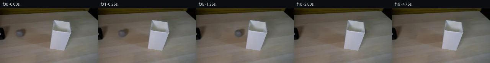

![首帧]()

Round 00
2026-11-05T16:12:17.557522+00:00像素候选变化代码 +158/−0inspection 更新
pixels 157b225fd7a94ea7 · code 93f59ed5cd82b472
查看本轮 generate.py 真实 diff
--- previous/generate.py
+++ current/generate.py
@@ -0,0 +1,158 @@
+"""Local photographic pixel continuation, using no models or rendering engines."""
+from pathlib import Path
+import json
+import numpy as np
+import cv2
+from scipy import sparse
+from scipy.sparse.linalg import spsolve
+from PIL import Image, ImageDraw
+from artifact_io import save
+
+ROOT = Path(__file__).resolve().parent
+SOURCE = np.array(Image.open(ROOT / 'first_frame.png').convert('RGB'))
+H, W = SOURCE.shape[:2]
+yy, xx = np.mgrid[:H, :W].astype(np.float64)
+CX, CY = 51.0, 65.6
+RX, RY = 10.2, 10.1
+
+
+def clean_plate():
+ # Reconstruct a small tabletop area from nearby grain, with a Poisson
+ # correction matching the real boundary colours. No unseen reference used.
+ body = ((xx - CX) / 13.3) ** 2 + ((yy - CY) / 12.0) ** 2 < 1
+ cast = ((xx - 58.0) / 17.5) ** 2 + ((yy - 59.3) / 11.0) ** 2 < 1
+ mask = body | cast
+ donor = cv2.remap(SOURCE.astype(np.float64),
+ (xx + 37).astype(np.float32),
+ (yy - 2).astype(np.float32), cv2.INTER_LINEAR,
+ borderMode=cv2.BORDER_REFLECT)
+ rows, cols = np.nonzero(mask)
+ ids = np.full((H, W), -1, dtype=int)
+ ids[rows, cols] = np.arange(len(rows))
+ ar, ac, av = [], [], []
+ rhs = np.zeros((len(rows), 3))
+ for k, (y, x) in enumerate(zip(rows, cols)):
+ ar.append(k); ac.append(k); av.append(4.0)
+ for dy, dx in [(-1, 0), (1, 0), (0, -1), (0, 1)]:
+ ny, nx = y + dy, x + dx
+ rhs[k] += donor[y, x] - donor[ny, nx]
+ if mask[ny, nx]:
+ ar.append(k); ac.append(ids[ny, nx]); av.append(-1.0)
+ else:
+ rhs[k] += SOURCE[ny, nx]
+ mat = sparse.csr_matrix((av, (ar, ac)), shape=(len(rows), len(rows)))
+ base = SOURCE.astype(np.float64).copy()
+ base[rows, cols] = spsolve(mat, rhs)
+ return np.clip(base, 0, 255), mask
+
+BASE, REPAIR = clean_plate()
+# A blurred photographic difference includes both original ball and its shadow.
+# Keeping its antialiasing avoids a hard edge or a newly invented sphere style.
+DELTA = SOURCE.astype(np.float64) - BASE
+r = np.sqrt(((xx - CX) / RX) ** 2 + ((yy - CY) / RY) ** 2)
+body_alpha = np.clip((1.13 - r) / .22, 0, 1)
+shadow_log = np.minimum(np.log((SOURCE.astype(float) + 1) / (BASE + 1)), 0)
+shadow_log *= (1 - body_alpha)[..., None]
+# Photographic high-frequency fuzz/seam detail, rotated on a sphere. The
+# smooth photographed light field stays at its original screen orientation.
+smooth = cv2.GaussianBlur(SOURCE.astype(np.float64), (0, 0), 1.15)
+texture = (SOURCE.astype(float) - smooth) * body_alpha[..., None]
+texture *= (r < .83)[..., None]
+
+# Subpixel silhouette of the fixed lampshade, including its top rim.
+scale = 4
+silhouette = Image.new('L', (W * scale, H * scale), 0)
+draw = ImageDraw.Draw(silhouette)
+outline = [(142.0, 30.3), (182.4, 36.1), (186.0, 62.3),
+ (166.4, 112.0), (129.3, 105.4), (136.9, 58.0)]
+draw.polygon([(round(x * scale), round(y * scale)) for x, y in outline], fill=255)
+OCCLUSION = np.asarray(silhouette.resize((W, H), Image.Resampling.LANCZOS), float) / 255
+# Hard interior conservation; retain the original photographed edge pixels.
+OCCLUSION = np.maximum(OCCLUSION, (SOURCE.mean(axis=2) > 142) &
+ (xx > 130) & (xx < 184) & (yy > 34) & (yy < 108))
+
+
+def shift(array, dx):
+ return cv2.warpAffine(array, np.float32([[1, 0, dx], [0, 1, 0]]),
+ (W, H), flags=cv2.INTER_LINEAR,
+ borderMode=cv2.BORDER_CONSTANT, borderValue=0)
+
+
+def rotated_texture(distance):
+ # Sphere surface rotates about the table depth direction. Reflect the
+ # unknown back hemisphere into the known texture, preserving its scale.
+ u = (xx - CX) / RX
+ v = (yy - CY) / RY
+ z = np.sqrt(np.maximum(0, 1 - u*u - v*v))
+ points = np.stack([u, v, z], axis=-1)
… diff truncated; 71 more lines …